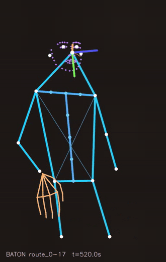
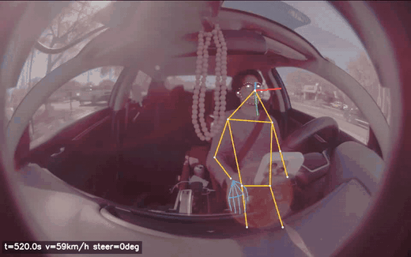
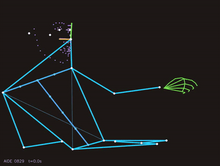
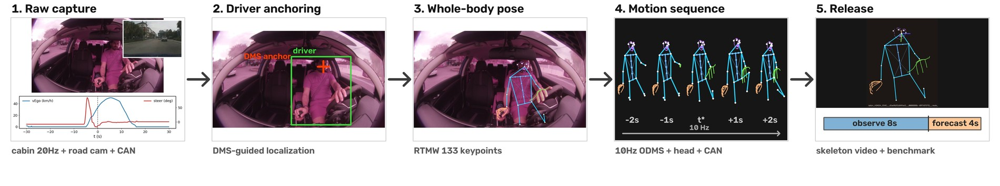
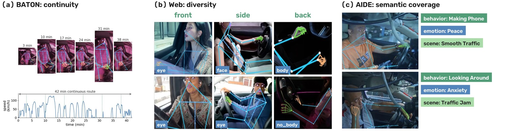
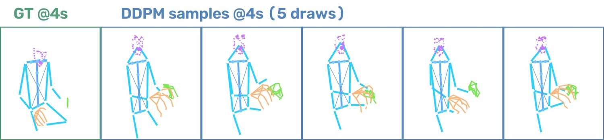
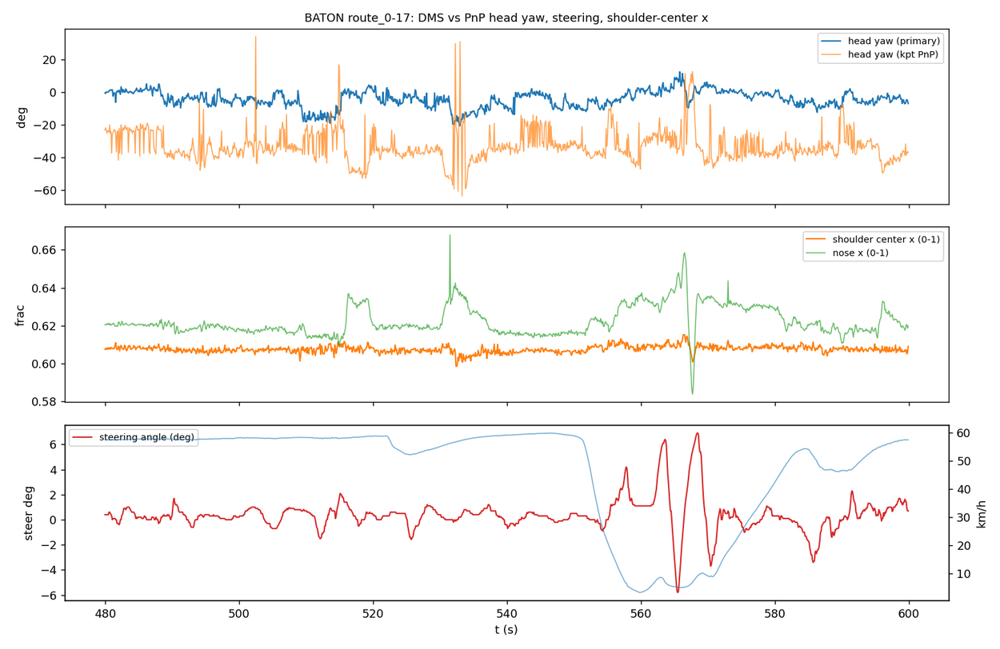
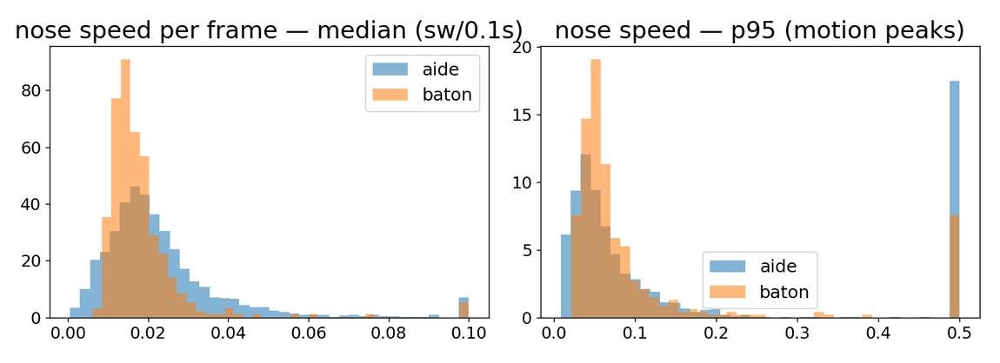
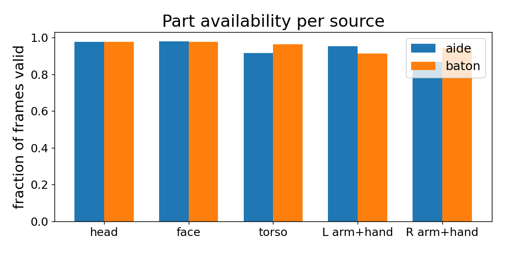

DriveMotion: A Large-Scale Multi-Source Benchmark for Driver Motion Sequence Modeling & Forecasting



A skeleton-based benchmark for forecasting in-cabin driver body motion a few seconds ahead.
Overview
DriveMotion combines in-cabin driver monitoring with motion forecasting, standardizing three heterogeneous sources into a single skeleton motion representation and evaluation protocol. It provides 400 hours of in-cabin motion at 10 Hz, with 133 whole-body keypoints per frame (skeleton-only, privacy-reduced), yielding 9,010 sequences from 360 drivers and 680,082 forecasting windows, together with synchronized CAN telemetry and road-camera context. The standardized task observes 8 seconds of motion and predicts the next 4 seconds. Source data spans the BATON fleet (320 h), a web corpus (78 h), and AIDE (2.4 h, with behavior labels). Skeleton artifacts and code are released under CC BY 4.0.

Pipeline: heterogeneous sources unified into a skeleton motion representation.

An example of extracted skeleton motion with synchronized context.

Diverse motion futures from a diffusion-based forecaster.

A forecasted driver motion sequence.

Motion-energy profiles over time.

Per-body-part keypoint validity across the corpus.
Motion in Context
Skeleton motion overlaid on the in-cabin view and across source datasets.
BibTeX
@misc{wang2026drivemotion,
title = {DriveMotion: A Large-Scale Multi-Source Benchmark for Driver Motion Sequence Modeling and Forecasting},
author = {Wang, Yuhang and Zhou, Hao},
year = {2026},
howpublished = {Hugging Face Datasets},
url = {https://huggingface.co/datasets/HenryYHW/DriveMotion}
}